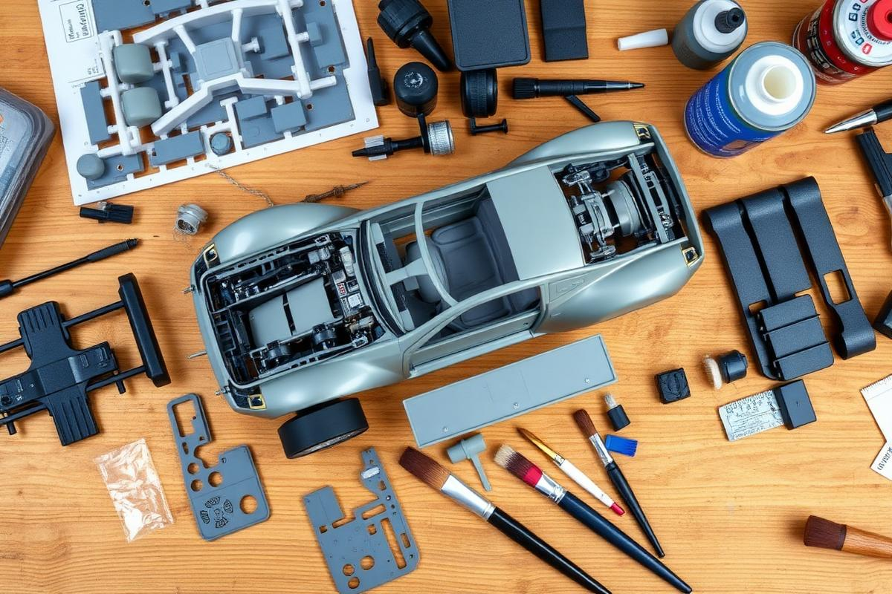
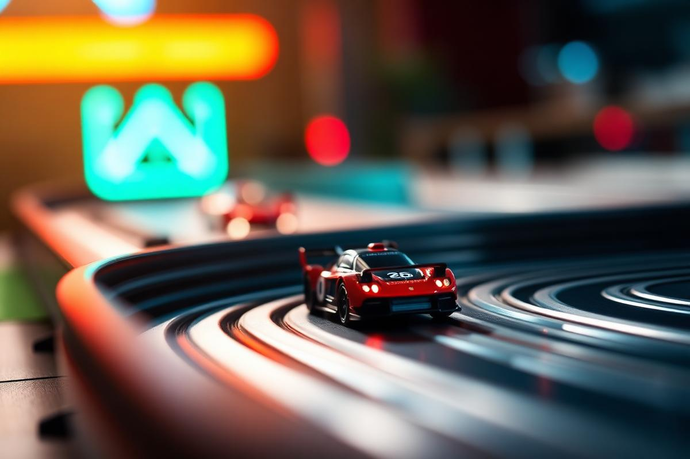

A arte de construir o mundo dos automóveis em escala — peça por peça, camada por camada, com a mesma paixão de quem desenhou os originais.
Automodelismo é o hobby — e a arte — de construir réplicas de automóveis em escala reduzida. Mais do que montar peças, é compreender mecânica, proporção, cor e história, transformando um conjunto de partes plásticas em um pequeno monumento ao engenho humano sobre quatro rodas.
Reconhecida como Especialidade desde 1928 pela Associação Geral, Automodelismo pertence à área de Artes e Habilidades Manuais. Ela une paciência, precisão e pesquisa: o desbravador aprende a seguir instruções, dominar ferramentas, pintar com técnica e — talvez o mais importante — contar a história daquilo que cria.
"Cada modelo é um automóvel real reduzido a uma escala onde cabe na mão, mas nunca na pressa."

O ponto de partida é construir ao menos um modelo de plástico a partir de um kit de fábrica, mantendo o carro o mais fiel possível ao padrão original. É o exercício de leitura, paciência e fidelidade.
As escalas mais comuns são 1:24 e 1:25 (clássicas para iniciantes), 1:18 (modelos grandes e detalhados) e 1:32 ou 1:43 (compactas). Para o primeiro modelo, prefira 1:24.
Antes de cortar a primeira peça, leia o manual inteiro. Identifique as árvores de peças, a ordem de montagem e onde a pintura precisa ser feita ANTES da colagem.
Alicate de corte fino, estilete, lima de unha, lixa d'água (320 a 1500), cola para plástico (à base de solvente), tintas acrílicas e pincéis 0, 2 e 4.
Escolha entre dois caminhos: aprofundar a arte da personalização, ou viver a emoção da pista.
Construir um segundo modelo usando os acessórios opcionais que vêm no kit, ou criar alterações com massa de vidraceiro (putty) e peças de outros kits — prática conhecida como kitbashing. Decalques, sozinhos, não contam como modificação.
Pintar o modelo é parte obrigatória desta opção.

Construir um modelo de corrida segundo as normas do Campeonato de Automodelismo e participar de uma corrida. As três grandes famílias de carros de competição em escala são:
Carros que correm em pistas com canaletas eletrificadas, alimentados por contato. Velocidade depende do controle (gatilho) do piloto. Escalas comuns: 1:24 e 1:32.
Modelos elétricos ou a combustão controlados por rádio, com motores brushed/brushless. Disputam categorias on-road, off-road, drift e rally em pistas próprias.
Carros sem motor que descem rampas por gravidade — tradição forte nos clubes. O foco é peso, aerodinâmica e atrito mínimo nas rodas.
A história do automóvel é também a história da evolução da tecnologia. Dos primeiros veículos movidos a vapor aos carros elétricos e autônomos, cada época trouxe mudanças que transformaram a forma de dirigir — motores mais potentes e eficientes, transmissões automáticas, direção assistida, controles eletrônicos e sistemas inteligentes que redefiniram conforto, desempenho e segurança.
O francês Nicolas-Joseph Cugnot constrói um triciclo movido a vapor — pesado, lento e capaz de carregar canhões. É considerado o ancestral do automóvel.
Na Alemanha, Karl Benz patenteia o primeiro automóvel movido a gasolina — três rodas, motor monocilíndrico de 0,9 hp e velocidade máxima de 16 km/h. É o marco zero da indústria automobilística.
Henry Ford lança o Modelo T e introduz a linha de montagem, popularizando o carro: o tempo de fabricação cai de 12 horas para 90 minutos, e mais de 15 milhões de unidades são produzidas.
A General Motors apresenta o Hydra-Matic, primeira transmissão automática totalmente funcional vendida em larga escala, no Oldsmobile.
O engenheiro Nils Bohlin, da Volvo, inventa o cinto de segurança de três pontos — uma das criações que mais salvou vidas na história.
Surgem os primeiros sistemas eletrônicos de injeção e, mais tarde, as ECUs (centrais eletrônicas) controlando ignição, freios e câmbio.
O Toyota Prius chega ao mercado japonês como o primeiro carro híbrido produzido em massa, abrindo caminho para a eletrificação global.
Tesla populariza o carro 100% elétrico de alta performance. Sistemas de assistência ao motorista (ADAS) evoluem rumo à direção autônoma com câmeras, radares e inteligência artificial.
Do monocilíndrico de Benz (954 cm³) aos V12 de Le Mans, passando pelos econômicos 1.0 modernos: a evolução dos motores é a evolução do automóvel. O ciclo Otto (4 tempos) ainda é a base da maioria, mas os elétricos eliminam a explosão e trocam pistões por imãs.
Os automóveis vendidos atualmente utilizam diferentes formas de propulsão. Conhecer essas tecnologias ajuda a entender como a indústria automobilística continua evoluindo em busca de desempenho, eficiência e redução de emissões.
É o sistema mais tradicional. Um motor transforma a energia do combustível — como gasolina, etanol ou diesel — em movimento por meio da combustão. Ainda equipa grande parte dos carros disponíveis no mercado.
Combina um motor a combustão com um ou mais motores elétricos. Dependendo do modelo, os dois sistemas podem trabalhar juntos ou alternadamente, buscando maior eficiência e menor consumo de combustível.
Utiliza motores elétricos alimentados por baterias recarregáveis. Não depende da combustão para movimentar o veículo e representa uma das principais tecnologias da atual transformação da indústria automobilística.
Começou como uma alavanca (tiller) nos primeiros carros, virou um aro grande e fino sem assistência, ganhou direção hidráulica, depois elétrica, e hoje carrega botões, telas, paddle shifts e sensores de mão. Em alguns conceitos, ele simplesmente desaparece.
Antes de pintar, procure fotos do carro real. Muitos modelos exigem cores específicas de fábrica — algo que faz toda a diferença para a fidelidade.
Não escolha um Ferrari de 250 peças no primeiro kit. Um Fusca, um Mustang clássico ou uma picape em escala 1:24 são ideais para aprender.
Tire fotos de cada etapa. Vai ajudar a montar a apresentação da especialidade — e cria um portfólio para os próximos modelos.